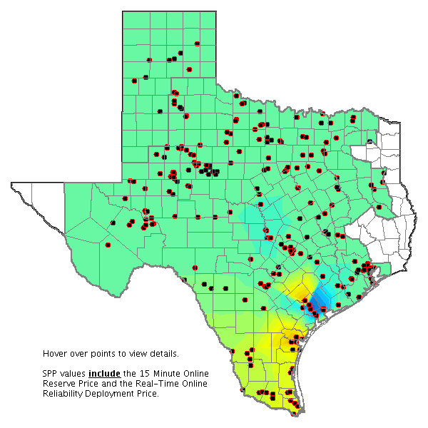
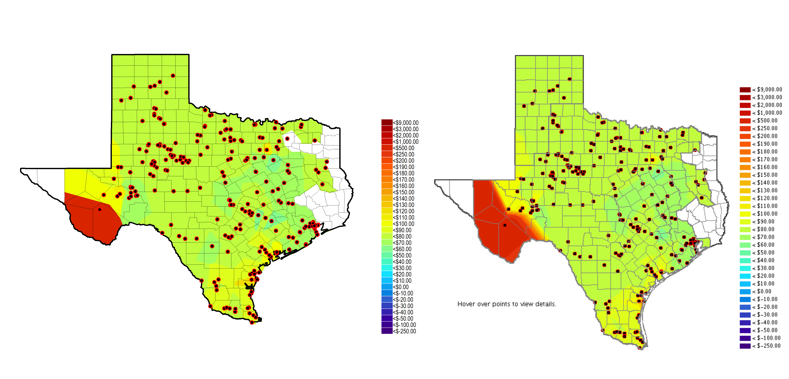
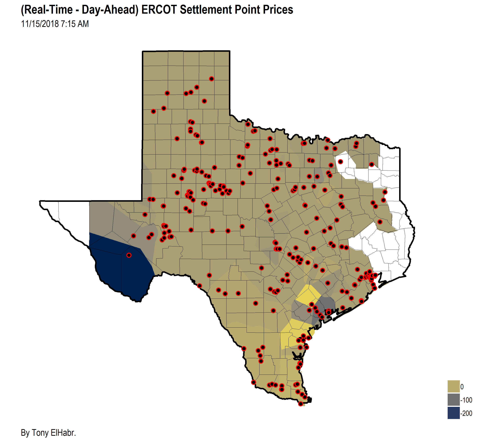

Introduction
I’ve written some “tutorial”-like content recently—see here, here, and here—but I’ve been lacking on ideas for “original” content since then. With that said, I thought it would to try to re-create something with R. (Not too long ago I saw that Andrew Heiss did something akin to this with Charles Minard’s well-known visualization of Napoleon’s 1812.)
The focus of my re-creation here is the price contour map shown on the front page of the website for the Electric Reliability Council of Texas, the independent system operator of electric power flow for about 90 percent of Texas residents, as well as the employer of yours truly).

Without going too much into the details of what kind of information and insight the map is supposed to provide 1, it’s sufficient for the reader to simply understand the following:
- “cooler” colors (i.e. blue and green) generally indicate regions of electric energy stability—where electric power generation is sufficiently meeting electric demand at a given point in time;
- and “warmer” colors (i.e. orange and red) generally represent the opposite—regions where there is some “stress” at a given point in time due to either the existence or threat of power imbalance.
Anyways, aside from my familiarity with the map (just from visiting the website so often), I thought that it would be interesting to try to re-create it because it presents some “challenges” that I had not really tackled before (even in my previous endeavors with {ggplot2} and maps)—namely, (1) manipulating KML data and (2) creating Voronoi shapes. 2
Re-creation Process
Unfortunately, the code needed to re-produce the map is not exactly trivial, so I’m going to leave details-hungry readers a link to the repository to explore the techniques that I used on their own time. 3 To summarize the process, here’s what I did:
I downloaded the price data CSVs for a specific settlement interval—7:15 AM interval on November 15, 2018—from public links on ERCOT’s website. 4
- The “Settlement Point Prices at Resource Nodes, Hubs and Load Zones” link in the “Real-Time Prices Reports” section at http://www.ercot.com/mktinfo.
- The “DAM Settlement Point Prices” link in the “DAM Results Reports” section at http://www.ercot.com/mktinfo.
Additionally, I downloaded the “static” KML data upon which the map is built.
- http://www.ercot.com/content/cdr/static/texas_counties.kml
- http://www.ercot.com/content/cdr/static/ercot_boundary.kml
Finally, I downloaded “dynamic” KML data representing the price points themselves (for both the Real-Time Market (RTM) and the Day-Ahead Market (DAM).
- http://www.ercot.com/content/cdr/contours/rtmSppPoints.kml
- http://www.ercot.com/content/cdr/contours/damSpp7Points.kml
I should Note that with this step and the others that follow, I repeated the actions for both data sets—those representing the RTM and DAM prices and points.
With the KML files for the price points, I extracted the longitude and latitude value pairs from the points defined in the KML using the
{tidykml}package. Additionally, I converted the legend (embedded in the KML) into a vector to be used for the final recreated plot(s) themselves. 5With the CSVs with the price data, I did a bit of “data munging” to convert the data for the two markets into an equivalent, easy-to-work-with format, and I joined this with the coordinate data from the previous step.
With the KML files representing the map’s static data, I created a
SpatialPolygonsDataFrameencompassing both the Texas state and county boundaries, as well as the ERCOT region boundaries (which is separate).This was probably the most difficult part for me to figure out. Nonetheless, with the help of the R community’s packages geared towards working with spatial data—most notably, the
{sp}and{sf}packages—as well as some great documentation and tutorials—I found this one particularly helpful, although one may consider its techniques “outdated” since it doesn’t utilize{sf}for interpolation. 6Next was the “heart” of the process—the interpolation to create the Voronoi shapes. 7 This may be the part that is most interesting to the reader, since a similar process could be applied to one’s own project. 8
Finally, I used
{ggplot2}to create the visualizations themselves. Notably, one must be careful with the order of calls togeom_polygon(),geom_sf(), andcoord_sf()in order to get the ordering of layers correct.
As for other details about the implementation, this process provided a perfect example of how/why functions can be so useful—it was really nice to just call a custom function twice to repeat each step for the two data sets, which certainly saved me some time and effort.
The Maps
So what does the final product look like? Below, I’ve placed my re-creations and the actual image side by side (with the help of the {magick} package).


Not bad, right? OK, so the sizing isn’t perfect, but I would say it’s close enough.
To take things one step further, I tried “subtracting” the values between the two re-created maps. There is some value to doing this—to visualize the discrepancies between prices in the two markets (which, hypothetically, should be equal).

Because this map displays information that is inherently different than those of the stand-alone RTM and DAM maps, I used a different color palette—specifically, the “E” palette that comes with the awesome {viridis} package, which is conveniently made available in {ggplot2} ever since the v3 release.
Final Thoughts
I really enjoyed this challenge to myself. I can certainly see myself doing something similar in the future, perhaps with a focus with which I’m less familiar (to give myself an even greater challenge). 9
Check out the pop-up help menu for a bit more information about the map itself and this link for more information about Locational Marginal Prices (LMPs).↩︎
If you’ve never heard of Voronoi diagrams, I would highly suggest reading a bit about them—the math behind them is fairly straightforward, and the results are quite elegant.↩︎
I wouldn’t normally use the
if ([... exists]) then [do ...] else [...]technique heavily like I do in the “main” script in the repository (because I don’t think it’s exactly a “best practice” and I’d rather use functions to achieve the same thing), but this idiom fit what I was trying to achieve at the time.↩︎Note that the map updates every 5 minutes for Real-Time Market (RTM) Locational Marginal Prices (LMPs) and every 15 minutes for RTM Settlement Point Prices (SPPs). Additionally, the Day-Ahead Market (DAM) LMP and SPP maps are update once per day, with filters allowing user to browse prices at a specified hour.↩︎
There was some serous “hard-coding” needed to do this.↩︎
The
{tidyverse}set of packages, as well as{rvest}and{xml2}were also instrumental in this process.↩︎As with the previous step,
R’s spatial packages were extremely helpful here.↩︎The rest of the steps may be too project-specific to be “generalizable”.↩︎
Just brainstorming, I really enjoyed Kirk Goldsberry’s piece post-2018-midterm elections (mostly for the infomrative and “clean” visuals). The maps are practically begging to be re-created!
↩︎